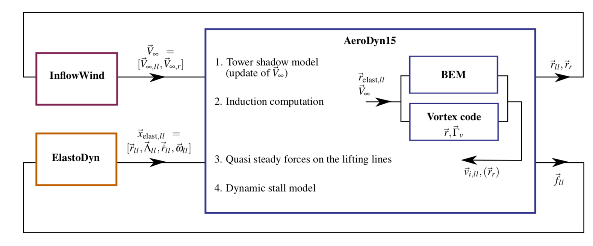

4.4.7. 상태공간 표현과 OpenFAST 연동
4.4.7.1. 상태, 제약 조건, 입력 및 출력 변수
OLAF 모듈은 다음을 통해 최신 버전의 OpenFAST에 통합되었습니다. AeroDyn, OpenFAST 모듈화 프레임워크([olaf-Jon13, olaf-SJJ15]). OpenFAST 프레임워크를 따르기 위해 소용돌이 코드는 모듈로 작성되었으며 해당 공식은 상태, 제약 조건 및 출력 방정식으로 구성됩니다. 모듈에 의해 조작되는 데이터에는 다음 벡터가 포함됩니다: 상수 매개변수, \(\vec{p}\); 입력, \(\vec{u}\); 제한된 상태, \(\vec{z}\); 상태, \(\vec{x}\); 그리고 출력, \(\vec{y}\). 벡터는 다음과 같이 정의됩니다.
매개변수, \(\vec{p}~-\) 상태 및 입력과 독립적인 내부 시스템 값 세트입니다. 매개변수는 초기화 시 완전히 정의될 수 있으며 시스템 상태 및 출력 방정식을 특성화할 수 있습니다.
입력, \(\vec{u}~-\) 상태와 함께 미래 상태와 시스템 출력을 계산하는 데 필요한 모듈에 제공되는 값 세트입니다.
제약 조건, \(\vec{z}~-\) 현재 시간 단계의 값을 기반으로 비선형 솔버를 사용하여 계산되는 대수 변수입니다.
상태, \(\vec{x}~-\) 모듈의 내부 값 세트. 이는 입력의 영향을 받으며 미래 상태 값과 출력을 계산하는 데 사용됩니다. 연속 상태가 사용됩니다. 이는 상태가 시간에 따라 미분 가능하고 연속 시간 미분 방정식의 특징을 갖는다는 것을 의미합니다.
출력, \(\vec{y}~-\) 출력 방정식을 통해 상태, 입력 및/또는 매개변수에 따라 모듈에서 계산하고 반환하는 값 집합입니다.
소용돌이 코드의 매개변수는 다음과 같습니다.
유체 특성: 동점도, \(\nu\).
익형 특성: 코드 \(c\) 극지 데이터 – \(C_l(\alpha)\), \(C_d(\alpha)\), \(C_m(\alpha)\)).
정규화, 점성 확산, 이산화, 후류 기하학 및 가속과 같은 알고리즘 방법 및 매개변수.
소용돌이 코드의 입력은 다음과 같습니다.
리프팅 라인의 다양한 노드의 위치, 방향, 병진 속도 및 회전 속도(\(\vec{r}_{ll}\), \(\Lambda_{ll}\), \(\vec{\dot{r}}_{ll}\), 및 \(\vec{\omega}_{ll}\), 각각)을 벡터로 수집하고, \(\vec{x}_{\text{elast},ll}\), 간결함을 위해. 이러한 수량은 OpenFAST의 메시 매핑 기능과 데이터 구조를 사용하여 처리됩니다.
요청된 위치의 교란 속도 장, 기록됨 \(\vec{V}_0=[\vec{V}_{0,ll}, \vec{V}_{0,m}]\). 리프팅 라인 포인트에 대한 위치가 요청됩니다. \(\vec{r}_{ll}\)및 라그랑주 마커, \(\vec{r}_m\). 매개변수를 기반으로 이 교란된 속도장은 자유류, 전단, 방향 전환, 난류, 타워 및 나셀 교란과 같은 영향을 포함할 수 있습니다. 속도장이 요청되는 위치는 일반적으로 라그랑주 마커의 위치입니다.
제약 조건 상태는 다음과 같습니다.
리프팅 라인을 따른 순환 강도, \(\Gamma_{ll}\).
연속 상태는 다음과 같습니다.
라그랑지안 마커의 위치, \(\vec{r}_m\)
각 소용돌이 요소와 관련된 소용돌이도, \(\vec{\omega}_e\). 와류 세그먼트에 와도를 투영하는 경우 이는 순환에 해당합니다. \(\vec{\Gamma}_e\). 각 세그먼트에 대해, \(\vec{\Gamma}_e= \Gamma_e \vec{dl}_e =\vec{\omega}_e dV_e\), 와 함께 \(\vec{dl}_e\) 및 \(dV_e\), 와류 세그먼트 길이 및 등가 와류 부피.
출력은 다음과 같습니다 1:
리프팅 라인 노드에서 유도된 속도, \(\vec{v}_{i,ll}\)
방해받지 않는 바람이 계산되는 위치는, \(\vec{r}_{r}\) (일반적으로 \(\vec{r_{r}}=\vec{r}_m\)).
4.4.7.2. 상태, 제약 조건 및 출력 방정식
상태, 제약 조건 및 출력 방정식에 대한 개요가 여기에 제공됩니다. 자세한 내용은 섹션 4.4.6. 제약 방정식은 각 리프팅 라인의 범위를 따라 순환 분포를 결정하는 데 사용됩니다. Van Garrel 방법의 경우 이 순환은 블레이드를 따른 받음각과 익형 계수의 함수입니다. 주어진 리프팅 라인 노드에서의 받음각은 교란되지 않은 속도의 함수입니다. \(\vec{v}_{0,ll}\), 그리고 소용돌이에 의해 유도된 속도, \(\vec{v}_{i,ll}\), 그 시점에서. 유도된 속도의 일부는 현재 시간 단계에서 흘려지고 따라가는 와도에 의해 발생하며, 이는 양력선을 따른 순환 분포의 함수입니다. 이 제약 방정식은 다음과 같이 작성될 수 있습니다.
여기서 \(\vec{\Gamma}_p\) 는 제시된 방법 중 하나에 따라 블레이드 스팬을 따라 순환을 반환하는 기능입니다. 섹션 4.4.6.3.
상태 방정식은 와도의 시간 전개와 라그랑지 마커의 대류를 지정합니다.
여기서,
\(\vec{v}_\omega\) 는 영역의 소용돌이에 의해 유도된 속도입니다.
\(\vec{V}_\omega(\vec{r},\vec{r}_m,\vec{\omega})\) 주어진 지점에서 유도된 속도를 계산하는 함수입니다. \(\vec{r}\), 라그랑주 마커의 위치와 소용돌이 요소의 강도를 기반으로 합니다.
아래 첨자 \(e\) 요소에 수량이 적용되었음을 나타냅니다. 그리고
소용돌이, \(\vec{\omega}\), 이산 컨볼루션을 통해 와류 요소의 와도로부터 복구됩니다.
와류 세그먼트 시뮬레이션의 경우 점성 분할 알고리즘이 사용되며 대류 단계(Eq. (4.31))는 해결되는 주요 상태 방정식입니다. 와도 신축이 자동으로 고려되고 확산이 수행됩니다. 사후. 속도 함수, \(\vec{V}_\omega\), Biot-Savart 법칙을 사용합니다. 출력 방정식은 다음과 같습니다.
4.4.7.3. AeroDyn와 통합
Vortex 코드는 OpenFAST의 공기역학 모듈의 하위 모듈로 통합되었으며, AeroDyn. OpenFAST의 다양한 모듈과 하위 모듈 간의 데이터 흐름은 다음과 같습니다. 그림 4.16. BEM 옵션(예: 팁 손실 계수), 스큐 모델 및 동적 유입과 같은 AeroDyn 입력은 소용돌이 코드를 사용할 때 삭제됩니다. 환경 조건, 타워 그림자, 동적 실속 모델 옵션이 사용됩니다. 이번 통합에는 구조조정이 필요했다. AeroDyn 타워 그림자 모델링, 유도 계산, 리프팅 라인 힘 계산 및 동적 실속과 관련된 코드 부분을 분리하는 모듈입니다. 동적 실속 모델은 와류 코드와 함께 사용될 때 발산 와도의 효과가 두 번 고려되지 않도록 조정됩니다. 사이의 인터페이스 AeroDyn 유입 모듈, InflowWind, Vortex 코드에 의해 추가로 요청된 지점을 포함하도록 수용되었습니다.


그림 4.16 OpenFAST-OLAF 코드 통합 워크플로
- 1
리프팅 라인의 하중은 와류 코드의 출력이 아닙니다. 그들의 계산은 별도의 하위 모듈에 의해 처리됩니다. AeroDyn.